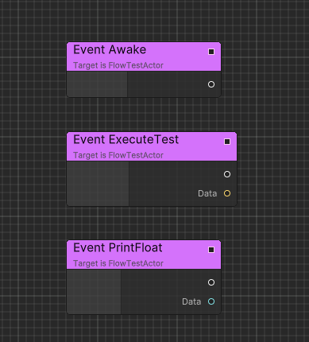

Executable Event
Following are the different types of Events in Flow.
Execution Event
ExecutionEvent is a common event that can be used to trigger the execution of a FlowGraph instance.

You can double click the event node and rename it.
By default, ExecutionEvent without parameters can be created in search window.
ExecutionEvent with parameters can be created when you drag any port with type EventDelegate<>.

Also support port with type Action<> by implicit conversation.

Implementable Event
Implementable events can be defined in Container C# script to allow the script side to execute Flow logic.
Following is an implementation example.
public class FlowTest : FlowGraphObject /* Inherit from MonoBehaviour */
{
[ImplementableEvent]
public void Awake()
{
}
[ImplementableEvent]
public void PrintFloat(float data)
{
}
[ImplementableEvent]
public void ExecuteTest(string data)
{
}
}

Custom Event
CustomEvent allows you to define a event across flow graph and containers.
Here is an implementation example:
/* Add ExecutableEventAttribute to custom event in order to let event be exposed in flow graph */
[ExecutableEvent]
public class DamageBoxEvent: EventBase<DamageBoxEvent>
{
public Collision Collision { get; private set; }
/* Add ExecutableEventAttribute to static create function in order to let event can be created in flow graph */
[ExecutableEvent]
public static DamageBoxEvent Create(Collision collision)
{
var evt = GetPooled();
evt.Collision = collision;
return evt;
}
}
public class DamageBox: MonoBehaviour
{
private void OnCollisionEnter(Collision other)
{
using var evt = DamageBoxEvent.Create(other);
GetComponentInParent<FlowGraphObject>().SendEvent(evt);
}
}

In this case, we create a collision event and send an Event to the Flow Graph when the DamageBox is hit.
By using CustomEvent, we can ignore whether the Container has a corresponding implementation and only focus on the event itself.
Similar to the usage of Unity's GameObject.SendMessage.
Technique Details
The implementation of CustomEvent is based on source generator and Chris.Events, a contextual event system.